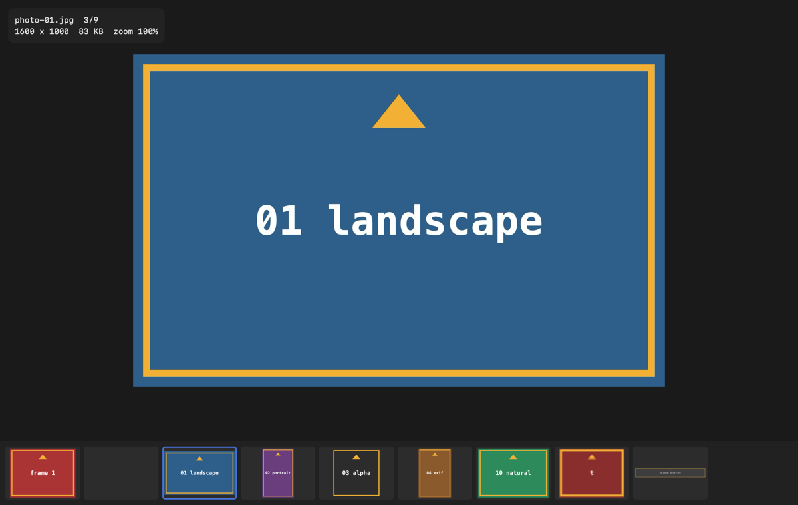
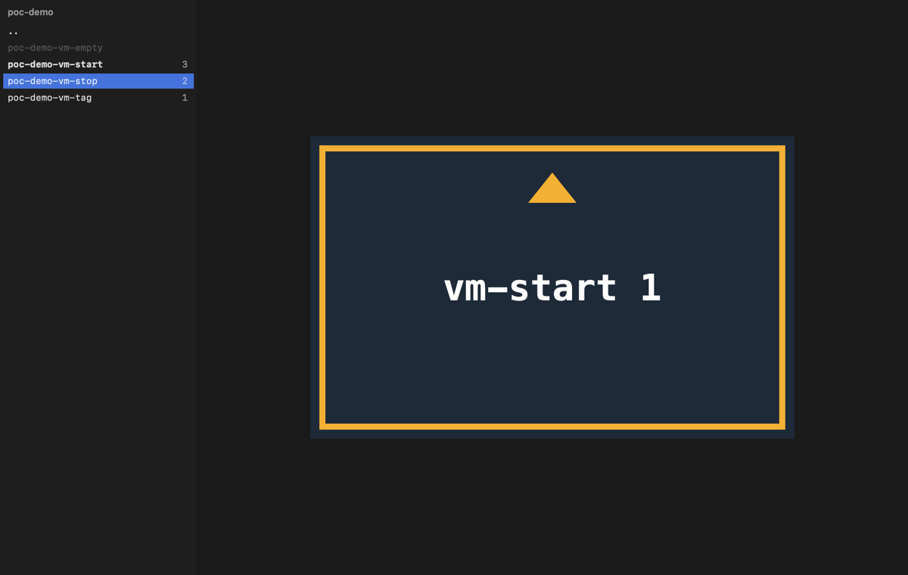
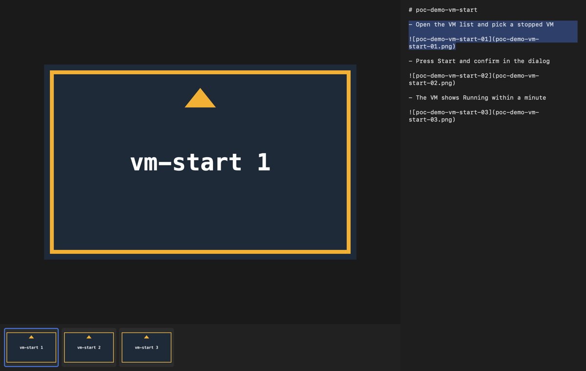

sView
0.2 · downloadA super-fast image viewer you drive from the keyboard, and the reader of the chain.
- About 210 ms from launch to the first image and 16 ms to the next on an M-series Mac.
- Vim grammar: counts, gg and G, marks, / to filter, a : line with completion.
- ] and [ jump between case folders; the case memo sits beside the captures.
- Everything ImageIO decodes, animated GIF and WebP, side-by-side compare. It never changes a file.


